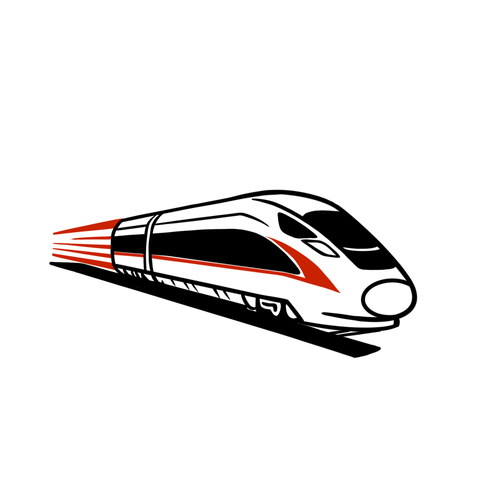

走过的路，清晰可见
查看卡内保留的交易和乘车记录，
结合内置数据识别线路与站点。
上海地铁 2 号线
人民广场南京东路陆家嘴
今天 08:42¥4.00
余额、行程，还有沿途的点滴。
TrafArch 帮你读懂交通卡，留存自己的出行记录。
仅提供信息读取与展示，不提供充值、支付或修改卡片功能。
每段旅程，都值得留存
沿着时间，回看走过的路。
卡片只保留有限条记录，记得及时保存。
读取快照、卡片名称，随时回来查看。
已保存的记录保存在你的设备中。
01 / 功能一览
把卡片里零散的信息，
整理成看得懂、找得到的记录。
查看卡内保留的交易和乘车记录，
结合内置数据识别线路与站点。
保存读取快照、自定义卡片名称，
让熟悉的卡片和记录随时可寻。
相机扫描或相册导入，解析符合 JT/T 1179 标准的乘车码。
扫描 · 导入 · 解析查看历次保存的结果，按需导出文本。分享前记得检查个人信息。
保存 · 重命名 · 导出在“专家”页面查看详细读取结果，为了解数据或排查问题提供线索。
详细信息 · 读取诊断在手机系统设置中打开 NFC，启动 TrafArch。
将一张卡贴近手机背面感应区，保持不动，直到读取结束。
查看本次读到的卡片信息，进入“行程”回看最近记录。
保存卡片后随时回看。也可在设置中开启读取后自动保存。
03 / 卡种支持
城市、卡种与发行批次各不相同。
可显示的内容，以实际读取结果为准。
公开可访问的卡片信息、钱包余额、交易与乘车记录；线路与站点识别取决于卡内记录和参考数据。
支持读取部分城市和卡种的卡片信息、余额及记录，具体可读取内容因卡片而异。
部分支持已有以下城市的读取路径，支持情况取决于具体卡片版本。
提供识别和部分信息读取；Suica 可尝试读取开放服务中的余额与历史，取决于卡片和手机 NFC 能力。
部分支持支持部分产品识别，尚未实现港币钱包余额与交易读取。全国通交通联合侧金额不等于港币余额。
识别有限支持 JT/T 1179 标准乘车码的相机扫描与图片导入，不适用于所有支付码和城市自有格式。
标准支持没有找到匹配的卡种，试试其他关键词。
共 6 类卡种与乘车码。卡片仅保留有限条最近记录，及时保存可以留存已读到的信息。
已保存的卡片、读取快照与设置都保存在本机，方便之后回看。
参考数据随应用提供。系统扫码、模型下载及在线反馈等功能可能需要网络。
导出文件和运行日志可能含卡片标识与行程。公开分享前，请检查并遮盖个人信息。
确认手机支持 NFC 并已开启。调整卡片与手机背面的贴合位置，保持不动，避免叠放多张卡。较厚的保护壳或金属配件也可能影响感应。
若能感应但读取不完整，可能是卡片未适配、未开放相关数据或通信未完成。可以重试，并通过应用内“设置 → 反馈”提交问题。
站名识别需要卡片记录与内置参考数据匹配。未收录或编码含义不明时，会保留原始编码或显示“未匹配”，不一定代表没有读到记录。发卡城市也可能与实际乘车城市不同。
可以使用乘车码解析功能，通过相机扫描或从相册导入符合 JT/T 1179 标准的二维码。相机扫码需要相机权限；首次识别可能需要联网下载模型。系统扫码需要 Google Play 服务，可在设置中选择是否开启。
交通联合侧金额与港币钱包余额含义不同，不能互相替代。“港币余额未读取”表示本次没有读出实际港币余额，请通过八达通官方渠道核对。
不同来源或签名的安装包可能无法覆盖安装，请核对发布说明。卸载应用可能删除本地卡片档案，遇到更新错误时，请先了解原因，避免直接卸载。
下一段旅程，从这里开始

RailTrack AstroRail · 星途